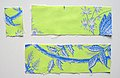
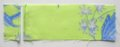
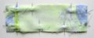
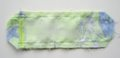
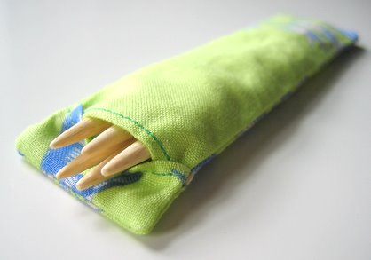

|
||||||||||||||||||
Premium Patterns Wintry Mix Mitts Love Bytes HawkeyeFree Patterns Kiddie Cadet Summerlin Ruffled Scarf Seamless DS Sock Simply Seamless Pouch Myriads of MushroomsExtras DIY Mitten Blocker Felt Patch Tutorial Yarn Dyeing Tutorial Needle Pouches Knitting Journal |
Double Pointed Needle PouchesDesigned by Grace Schnebly
Once I started to collect more and more sets of double pointed needles, it became almost impossible to keep them together! It was such a pain to find all of the needles in the set, and I figured it was only a matter of time before I lost them. I designed these pouches out of pure necessity. They’re super easy to make, require very little fabric, and you won’t have to mess around with snaps or buttons. Make a pouch for each one of your double pointed needle sets and they won’t get separated again! These pouches are also great for when you take your knitting on the go an only need to bring one set of needles with you. You can embroider the needle size on the outside of the pouch, or attach a number shaped button for easy reference. MaterialsSmall amount of material; I used fabrics from Amy Butler's Charm line in the Zest colorway. Tutorial1. You will need to cut three rectangles from your fabric. You will be cutting one of each Front Panel, Lower Back Panel, and Upper Back Panel pattern pieces. Below I have given the dimensions of each pattern piece depending on what size needle you are making a pouch for. All measurements pattern pieces are designed for 5” needles, however can easily be altered to fit any needle length. If your needles are longer, just add an inch to the length of the Front Panel and Lower Back Panel pieces for each inch your needles are longer than 5”. If your needles are shorter than 5” you can do the same alterations respectively to make shorter pouches. The Upper Back Panel will remain the same length and will not need to be altered when making longer or shorter needle pouches.
2. Fold the top of the Lower Back Panel down 0.25” so that wrong sides are facing. Sew across at 1/8" to secure fold. These stitches will be visible so do the best you can to keep these stitches straight. Repeat this step for the bottom of the Upper Back Panel. 3. Place the Upper Back Panel on top of the Front Panel with right sides facing. Make sure top of both panels are even. Next place the Lower Back Panel on top of the Front Panel, with right sides facing and bottoms of both panels even. The Lower Back Panel will overlap the Upper Back Panel by approximately 0.25”. Pin pattern pieces together. Make sure you can only see the wrong sides of all fabric pieces at this point! 4. Sew around edges; I used a 0.25" seam allowance. When you get to where the back panels overlap, sew over them once, backstitch and then sew over them again so they are held securely. Clip the fabric at the corners so it isn’t as bulky when you turn the pouch right-side-out. 5. Turn pouch right-side-out. Use knitting needle to push the corners of your pouch into crisp points then iron. Insert your needles and you’re finished!  |
   Recent ReviewsRecent Posts
 Our Favorites
|
||||||||||||||||
| © 2007 KathrynIvy.com | ||||||||||||||||||
{kind=link}
{kind=link}
{kind=link}
{kind=link}